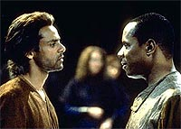
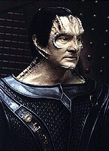
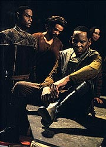
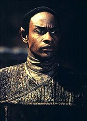
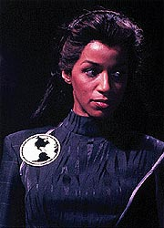

MANCHETE
DO EPISDIO
Aventura
leve traz de volta com sucesso
a Terok Nor do Universo do Espelho
Episdio
anterior | Prximo
episdio
Sinopse:
Data Estelar:
desconhecida.
Sisko est deixando o OPS ao final
de seu turno quando raptado por "Sorriso"
("Smiley", o Mirror-O'Brien do "universo do
espelho"), que se transporta junto com o comandante para uma
nave naquele universo. "Smiley" conta que o capito
Sisko do seu universo iniciou uma rebelio dos humanos contra a
Aliana Klingon-Cardassiana. Entretanto o Mirror-Sisko acaba de
ser morto, no curso de uma crucial misso para os rebeldes,
impedir uma cientista humana de completar um sistema capaz de
detectar as bases dos rebeldes nas Badlands. O Mirror-O'Brien quer
que o comandante termine tal misso. Sisko diz no estar
interessado, at descobrir que a esposa do falecido capito
Sisko a contraparte da sua prpria falecida esposa, Jennifer.
E que se ele no puder convenc-la a se unir rebelio, eles
tero de mat-la. Ele aceita afinal tomar o lugar do falecido
Mirror-Sisko.

Na
Terok Nor daquele universo, a intendente Kira diz professora
Sisko que o seu marido est morto e que ela termine o mais rpido
possvel o seu dispositivo de rastreio para terminar com o
derramamento de sangue causado pelo conflito Aliana X Rebeldes.
Jennifer continua o trabalho, acreditando inocentemente que est
fazendo um bem aos humanos. A intendente pouco se importa com as
vidas dos rebeldes (apesar de ter uma certa saudade do
"seu" Sisko, que a traiu para iniciar tal rebelio).
Sisko se encontra com os seus demais "comandados" que
incluem: Mirror-Rom (querendo vingar a morte do irmo),
Mirror-Bashir (aparentemente o seu segundo em comando),
Mirror-Tuvok (essencialmente igual ao Tuvok do universo de Sisko e
cia.) e Mirror-Dax (que a sua amante -- com quem ele acaba indo
para a cama para manter o seu disfarce).
Os rebeldes, comprando a idia do Mirror-Bashir, esto mais
interessados em matar a Mirror-Jennifer do que recrut-la, mas
Sisko (com a ajuda de "Smiley") acaba por convenc-los
(no sem antes enfiar a mo na cara da contraparte do doutor de
DS9) que uma cientista pode ser uma aliada importante na luta
deles pela liberdade. Mirror-Rom vai mais tarde a estao
orbitando Bajor e diz a intendente e ao Mirror-Garak sobre os
planos de Sisko e "Smiley". Os dois so capturados
antes que pudessem penetrar sorrateiramente nesta verso de Terok
Nor.

A
intendente manda o Mirror-O'Brien para trabalhar com os demais
escravos e envia Sisko (sob o olhar perplexo do Mirror-Garak) para
os aposentos dela (o comandante continua conseguindo enganar a
todos sobre a sua real identidade). A intendente diz que poderia
mant-lo vivo se ele voltasse a servi-la como o seu brao
direito, mas confessa que mesmo ela no tem certeza se poder
confiar nele novamente, o que quer dizer que ele eventualmente ter
que morrer.
O comandante Sisko deixado em aposentos para hspedes, o que
permite finalmente o encontro dele com a Mirror-Jennifer. Ela de
fato odiava o marido, um mulherengo, egocntrico e aventureiro,
segundo a cientista. Sisko continua com a farsa e pede desculpas
por "seus" atos passados. Diz tambm que se ela
completar o seu projeto, a intendente ir mandar matar todos os
rebeldes e que ela to escrava quanto os trabalhadores das
minas e no se d conta disto. O que a faz pensar.
Quando Sisko percebe estar conseguindo convencer Jennifer, ele
sinaliza para O'Brien (atravs de um transmissor sob a pele) que
provoca um grande acidente no setor de processamento de minrio,
permitindo que ele e os demais escravos fujam da instalao.
Sisko aproveita a confuso e foge com Jennifer, deixando os dois
guardas Klingons da porta dos aposentos para trs. O casal acaba
encontrando com o grupo de O'Brien na comporta de atracao em
que deveria estar docada a nave de fuga, mas somente encontram o
Mirror-Rom morto (a "traio" do Ferengi fazia parte
do plano de Sisko desde o comeo).

A
intendente descobriu todo o plano e armou um bloqueio para Sisko e
os demais. Mas este surpreendentemente no tenta avanar e recua
de volta ao setor de processamento de minrio, bloqueando os
acessos. As foras da intendente finalmente conseguem entrar em
tal instalao e Sisko e os outros no oferecem resistncia
alguma. O comandante diz que ativou a autodestruio da estao
(com o conhecimento da "sua" Terok Nor). Apesar de uma
total incredulidade inicial, a intendente incapaz de parar a
contagem e finalmente concorda com as exigncias de Sisko (tendo
certeza de que ele no est blefando) e deixa todo o seu grupo
partir.
De volta base rebelde, Jennifer confessa saber que Sisko no
o seu marido e o comandante diz que "Smiley" pode
contar toda a histria. Ela lhe d um beijo de adeus e o
Mirror-O'Brien cumpre a promessa de retornar Sisko para onde ele
pertence.
Comentrios:
Nesta semana tivemos um episdio com um genuno esprito de
aventura, com brilhantes atuaes (especialmente de Visitor e de
Brooks) e uma excelente direo de Kolbe. Infelizmente se perdeu
a trilha das questes "E se...?" Que fizeram de "Crossover"
(da temporada passada) um episdio to brilhante. A experincia
que resta divertimento certo, mas inevitvel a sensao
de potencial desperdiado. Mais detalhes, sem precisar tomar o
lugar da sua verso alternativa de um universo paralelo no
processo, nas linhas abaixo.
Talvez o mais discutvel aspecto de trama aqui seja o fato de
"Smiley" conseguir realizar o transporte entre os dois
universos e ainda assim no ser detectado por ningum em DS9. O
fato de tal coisa no ser discutida em detalhe at um trunfo
para o episdio. Ele teve bastante tempo para realizar tal feito
e uma extrema necessidade para implement-lo, sem esquecer que o
Mirror-Sisko era um homem de confiana da intendente e com
certeza teve oportunidades para "tomar algo emprestado"
de tempos em tempos (ele definitivamente tinha alguns recursos
especiais para iniciar a rebelio). E sobre a deteco, difcil
acreditar que o feixe que "Smiley" usou pudesse ser
interpretado como um transporte convencional, ou alguma outra bvia
ameaa. Sem maiores problemas quanto a esse ponto.
Por outro lado o ponto mais interessante da trama foi a "traio"
do Mirror-Rom, funcionando de uma forma no-intrusiva e realmente
surpreendente. O restante da histria bastante convencional
sem nenhum aspecto brilhante e nem tampouco ofensivo.
Posto isso, o episdio parece muito mais um veculo para dar um
"simulador de DS9" para Sisko, alm de permitir que
todos os atores envolvidos brincassem um pouco de RPG de carne e
osso. Sisko aparentemente consegue fazer tudo que ele ao menos
pensou em fazer uma vez na vida com as "suas" verses
de todos os personagens alternativos que aparecem aqui. E o
melhor, sem ter que responder a ningum a respeito disso.

Das
novas verses alternativas apenas a do Mirror-Rom tinha motivos
(derivados diretamente de "Crossover")
e uma funo a desempenhar no episdio. Ele queria vingar a
morte do irmo (algo bem pouco Ferengi -- se levarmos em conta
que ele deve ter herdado o bar -- que encaixa perfeitamente com o
funcionamento daquele universo) e provavelmente a intendente ficou
de olho nele por causa disso. curioso que este Rom tambm
mexa to bem com tecnologia.
Mirror-Bashir, Mirror-Dax e principalmente Mirror-Tuvok ocupam papis
pouco significativos e mesmo pouco justificados, apesar da
participao da contraparte de Dax aqui sempre causar comentrios
junto aos fs.
Os produtores resgataram a atrao latente que a real Dax tem
pelo real Sisko (ver "Fascination")
nesta semana. Outra pequena observao quanto Mirror-Dax.
Quando "Smiley" defende a sua idia de que a
Mirror-Jennifer poderia ser uma grande ajuda para a rebelio --
uma cientista que a Mirror-Dax no , mas que a real Dax --
ela fica visivelmente desconfortvel. Considerando isto o pedido
dela da cena anterior de fugir com Sisko, pode ser interpretado no
somente em vista do medo de aniquilao, mas tambm do receio
do retorno da rival. Talvez tenha faltado uma cena final decente
entre as "vivas do capito".
Nada do que ocorreu aqui com Sisko teria uma continuao direta
em qualquer episdio que no fosse um posterior segmento da
linha de histria do "universo do espelho". Mas vale
comentar especialmente os encontros do comandante com a
Mirror-Jennifer e a Mirror-Dax respectivamente.
Sisko demorou muito tempo para deixar para trs a morte de sua
esposa e definitivamente no poderia deixar a Mirror-Jennifer
morrer. "No de novo", como ele prprio disse. O que no
quer dizer que ele deveria de forma alguma estar propenso a se
apaixonar por esta outra pessoa. Ele demonstrou uma extrema
maturidade, em uma espcie de "prova de vida" que ele
prprio criou para si. Como se alguma parte dele estivesse
perguntando: "ser que eu deixei isto mesmo para trs?"
E ele passou no teste com a melhor das notas. Mas no temam pela
vida afetiva de Sisko. Um novo e verdadeiro amor para o comandante
est chegando (a capit Yates, a ser vista em breve em "Family
Business").
Ele ter dormido com a outra Dax cai na mesma categoria. Ele deve
ter pensado: "Como deve ser?" Este tipo de coisa deveria
ser mesmo trazido tona depois? Vale a pena arriscar uma amizade
como a dele com Dax? Sisko aparentemente acha que no.

Sisko
soube mover as peas com maestria com todos os envolvidos,
especialmente com Jennifer. Sem criar expectativas
contra-produtivas e sem mentir alm do seu disfarce (a
ingenuidade de Jennifer, apresentada mais cedo no episdio, torna
tudo mais fcil para Sisko tambm). O seu truque com o
computador no final foi meio simplrio, mas combina bem com a
superficialidade do episdio.
A intendente no pe mais freios na violncia do seu primeiro
oficial e mesmo o surpreende com os seus arroubos (provavelmente
devido morte do Mirror-Odo em "Crossover").
Ela tem todo o poder e riquezas possveis, mas sem um real
consorte, sua vida ridiculamente vazia. E no que ela no
esteja aberta a novas experincias (ela claramente bissexual).
Mirror-Kira est mesmo disposta a perdoar a traio de Sisko
para preencher a sua vida (ou por ego ou para se vingar no final
ou para enfurecer o Mirror-Garak ou para...). E o seu primeiro
oficial Cardassiano segue ainda mais raso do que em "Crossover".
O que claramente intencional.
A direo de Kolbe foi brilhante, com um verdadeiro festival de
closes, vistas e contravistas casadas, grandes angulaes,
espelhos, iluminao, fumaa etc. Um show. Os tiroteios foram
brilhantemente executados, sem dvida entre os melhores j
vistos em Jornada em todos os tempos, especialmente porque temos
claras referncias de todos os atiradores e alvos sem cortes
desesperados demais, alm de um uso extremamente criativo das
pinturas que tornam "infinitos" os corredores da estao.
A cena final na estao de processamento de minrio tambm foi
brilhante (sem contar a idia de colocar duas armas nas mos de
Sisko -- extremamente divertida).
Foi muito feliz a deciso de Behr e cia. de trazer tona o
personagem Mirror-Sisko de volta vida, ainda que de uma forma
indireta, levando em conta o quo bem Brooks conduziu o papel em "Crossover".
Aqui ele foi ainda melhor, interpretando Sisko se passando pela
sua falecida contraparte. Reparem, por exemplo, no
"timming" do ator quando ele consulta
"Smiley", pouco antes de ir para a cama com a Mirror-Dax
ou esmurrar o Mirror-Bashir. de fato admirvel. O destaque,
entretanto, vai para Visitor, que foi absolutamente deslumbrante.
Chega a ser desconcertante saber que ela a mesma atriz que
interpreta a real Kira. O gestual totalmente diferente e
consistente para cada indivduo. Meaney foi excelente como usual
e no tivemos nenhum elo fraco entre os regulares.
Tim Russ fez um Mirror-Tuvok muito similar ao real Tuvok, uma
muito estranha apario que no participou efetivamente da histria.
As cenas de Bell com Brooks foram excelentes, mas a cena inicial
em que a intendente informa sobre a morte do seu marido a
apresentou pouco expressiva (sem nenhum tipo de choque ou reao,
um verdadeiro nada). Robinson deve se divertir com um personagem to
caricato quanto este Mirror-Garak e fica com o destaque, Grodnchik
se saiu bem, mais srio do que o usual.
A base dos rebeldes nas Badlands foi um belo toque (fazendo uma
analogia com os Maquis). A mudana no visual e na postura de
"Smiley" foi notvel. Um ano de rebelio fez bem a
ele. Alguns ecos da trilogia de "Star Wars" tambm
estiveram presentes e espalhados pelo episdio.
A histria do "universo do espelho" continua com "Shattered
Mirror", da prxima temporada. A rebelio toma Terok
Nor e os Klingons mandam uma enorme surpresa para eles. E Sisko
novamente manipulado a ajudar os rebeldes. Divertimento
garantido, especialmente para os fs de batalhas espaciais.
"Through The Looking Glass" uma boa hora de ao
e aventura, extremamente bem atuada e dirigida. Mas
definitivamente no extrai todo o drama das situaes
subjacentes (notadamente do encontro entre Sisko e
Mirror-Jennifer) e tambm tem pouco interesse em contrastar as
vidas dos personagens alternativos com as das suas contrapartes de
DS9. Ele superficial e sabe disso. O que no o impede de ser
extremamente agradvel.
Citaes
Mirror-Jennifer - "Now
what?"
("E agora?")
Sisko - "I'll think of something."
("Vou pensar em algo.")
Intendente - "I think you'll find that random and
unprovoked executions will keep your work force alert and
motivated."
("Acho que voc vai descobrir que execues no-provocadas
e aleatrias vo manter sua fora de trabalho alerta e
motivada.")
Intendente - "The only reason I can think of to keep you
alive is to infuriate Garak."
("A nica razo que posso pensar para mant-lo vivo
para enfurecer Garak.")
Sisko - "What better reason do you need?"
("Que razo melhor voc precisa?")
Sisko - "Do I get a vote?"
("Tenho um voto.")
Intendente - "Of course you do. It just doesn't
count."
("Claro que sim. S que no conta.")
Mirror-Jennifer - "I still hate you."
("Eu ainda te odeio.")
Sisko - "I know."
("Eu sei.")
Trivia:
 Ao final deste episdio j esto mortas no universo do espelho
as contrapartes de: Quark, Odo, Ben Sisko e Rom.
Ao final deste episdio j esto mortas no universo do espelho
as contrapartes de: Quark, Odo, Ben Sisko e Rom.
Participao de Tim Russ, o Tuvok de Voyager, como a sua
contraparte do universo espelho. Ele havia participado
anteriormente da srie, como um Klingon, em "Invasive
Procedures".
Participao de Felecia M. Bell como a contraparte do universo
do espelho da falecida esposa de Ben Sisko (vista em "Emissary").
Dennis Madalone, que reprisa o seu papel de rebelde caolho de "Crossover",
o coordenador de dubls de DS9.
O universo alternativo retrado em "Through The Looking
Glass" o mesmo que foi descoberto no episdio "Mirror,
Mirror" da segunda temporada da Srie Clssica
de Jornada.
Ficha
tcnica:
Escrito por Ira Steven
Behr & Robert Hewitt Wolfe
Direo de Winrich Kolbe
Exibido em 17/04/1995
Produo: 066
Elenco:
Avery Brooks como
Benjamin Lafayette Sisko
Ren Auberjonois como Odo
Nana Visitor como Kira Nerys
Colm Meaney como Miles Edward O'Brien
Siddig El Fadil como Julian Subatoi Bashir
Armin Shimerman como Quark
Terry Farrell como Jadzia Dax
Cirroc Lofton como Jake Sisko
Elenco convidado:
Andrew Robinson
como Garak
Felecia M. Bell como Jennifer Sisko
Max Grodnchik como Rom
Tim Russ como Tuvok
John Patrick Hayden como um supervisor Cardassiano
Dennis Madalone como o rebelde caolho